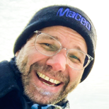

Curriculum Vitae

Education
- 2004-2008: Ph.D., University of New South Wales (UNSW), Sydney, Australia
- 1999-2000: University of Tasmania (UTAS), Hobart, Australia
- 1996-2003: Dipl. Biol. / MSc, Ludwig-Maximilians-Universität (LMU), Munich, Germany
Professional Experience
- 2023-present: Visiting Lecturer, Liverpool John Moores University, UK (Profile page)
- 2018-2020: Postdoctoral Research Fellow, E&ERC, UNSW, Australia
- 2015-2018: Postdoctoral Research Fellow, School of Biological Sciences, Monash University, Melbourne, Australia
- 2014-2015: Postdoctoral Research Fellow, Department of Biological Sciences, George Washington University, Washington D.C., USA
- 2012-2013: Postdoctoral Research Fellow, EBC/Animal Ecology Department, Uppsala University, Sweden
- 2010-2012: Wenner-Gren Postdoctoral Research Fellow, EBC/Animal Ecology Department, Uppsala University, Sweden
- 2008-2010: Postdoctoral Research Fellow, Station d’Ecologie Expérimentale du CNRS à Moulis, France
- 2008: Postdoctoral Research Associate, Evolution & Ecology Research Center, School of Biological, Earth and Environmental Sciences, University of New South Wales, Sydney, Australia